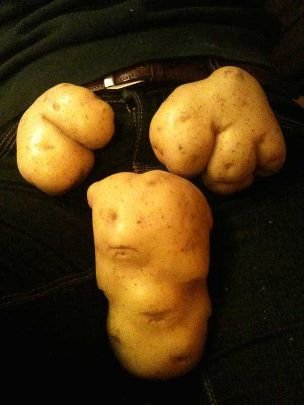

La vie est une matière comme une autre.
Tapis de pommes
 Voir de l'art partout.
Voir de l'art partout.
Le Soleil tape
 Invention improvisée.
Invention improvisée.
Il n'y avait plus de place
 Un arbre peut servir de mille façons.
Un arbre peut servir de mille façons.
I love chantiers
 Le BTP se permet de tout modifier le temps d'une construction.
Le BTP se permet de tout modifier le temps d'une construction.
Il nous salue
Il avait la bouche grande ouverte, prêt à accueillir les J.O.
Comme un lézard
 Le serpent de métal était constipé.
Le serpent de métal était constipé.
Mécanisation
Accouplement entre une humaine et un pneu.
Kikoo
Elle avait trouvé son nouveau meilleur ami.
Kiki
 Leur relation ne tarda pas à prendre une autre tournure.
Leur relation ne tarda pas à prendre une autre tournure.
Chute maîtrisée
Suite à son voyage dans le futur, il est sorti de la route.
Pigeon artiste
Les artistes et les pigeons sont des âmes-soeurs.
Je me sens un peu pigeon
 Je vous raconte pas la tête des contrôleurs.euses.
Je vous raconte pas la tête des contrôleurs.euses.
Consignes capitalistes
 Bin du coup on achète rien alors.
Bin du coup on achète rien alors.
Guerre imaginaire
 Enfants, prenez les armes.
Enfants, prenez les armes.
Nos petits cochons
 Y a plus de règles.
Y a plus de règles.
Un vieux frère
 Il était aussi pourri que coco.
Il était aussi pourri que coco.
L'union bourgeoise
 Depuis mon poste de travail, j'assistais au mariage d'une voiture et d'une obélisque.
Depuis mon poste de travail, j'assistais au mariage d'une voiture et d'une obélisque.
Pomme-patate

Nous avons le plaisir de vous présenter monsieur bite.
La famille de coco
Il avait rejoint son espèce pour toujours, il devait se sentir bien..
Bécoteries
 Les grosses machines ont le droit de s'aimer.
Les grosses machines ont le droit de s'aimer.
Du jamais vu
 Je devais choisir un cours technique, j'ai décidé de faire de la mosaïque.
Je devais choisir un cours technique, j'ai décidé de faire de la mosaïque.
Embryon
Je voulais voir si ça marchait, ça a bien marché.
Coco, tu me manques
 Je l'avais reccueilli devant ma porte.
Je l'avais reccueilli devant ma porte.
Naissance
Elle faisait ses premiers pas.
Pièce d'identité d'une autre vie.
 J'ai été Chilien vite fait.
J'ai été Chilien vite fait.
Vie fantasmée
De mon temps les consoles étaient en bois.